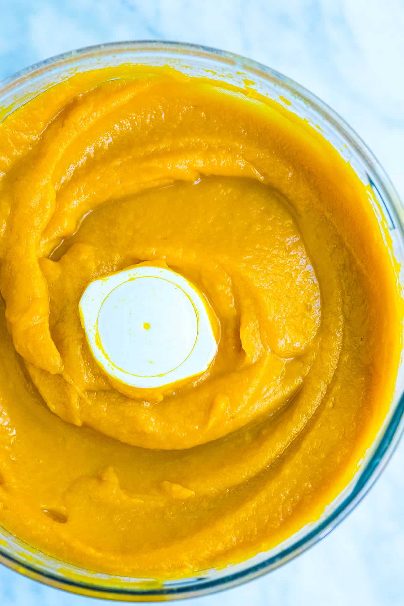

Recipe name

Description
Skip the can and make your own pumpkin puree at home. It’s easy, smells
incredible and works perfectly in your favorite pumpkin recipes. Look for
baking pumpkins often labeled “sugar pumpkins” or “pie pumpkins”. There’s
lots of variety so if you are buying directly from the farmers at farmer’s
markets, ask them which pumpkin works best for your needs. This method
works with most winter squashes — think butternut, acorn or interesting
varieties like honeynut.
The recipe requires only two ingredients and that’s counting salt, which
is technically optional! You are looking at 45 to 60 minutes of roasting
time, but that’s really not too bad especially since it makes your home
smell amazing. You can make pumpkin puree in advance, too. It will keep
for a week in the refrigerator and for months in the freezer. (Some find
that the texture changes over time when frozen, but we haven’t had any
issues with that yet. I’ll keep you updated, though.)
Ingredients
Instructions
-
Heat the oven to 400 degrees F and line a baking sheet with parchment
paper.
-
Rinse and pat dry the pumpkin. Cut the squash from stem to end, but
don’t try to cut through the stem (it’s too tough). When you’ve cut
through the pumpkin, just pull each half apart. We do this in two parts.
Cut one side from the stem down to the bottom of the pumpkin. Remove the
knife, rotate the pumpkin to the opposite side then do the same. When
there is a slit down both halves of the pumpkin, put down the knife and
pull the halves apart. They should separate at the stem.
-
Scoop out the seeds and most of the stringy bits. Lightly season the
inside of the pumpkin halves with salt then place cut-side-down onto the
baking sheet. Bake until the pumpkin can easily be pierced with a knife
in several places and the flesh is pulling away from the skin, 45 to 60
minutes.
-
Cool until you can safely handle the halves then scoop out the soft
flesh into a food processor — depending on how large the pumpkin is, you
may need to do this in two batches. Process until very smooth, 3 to 5
minutes.